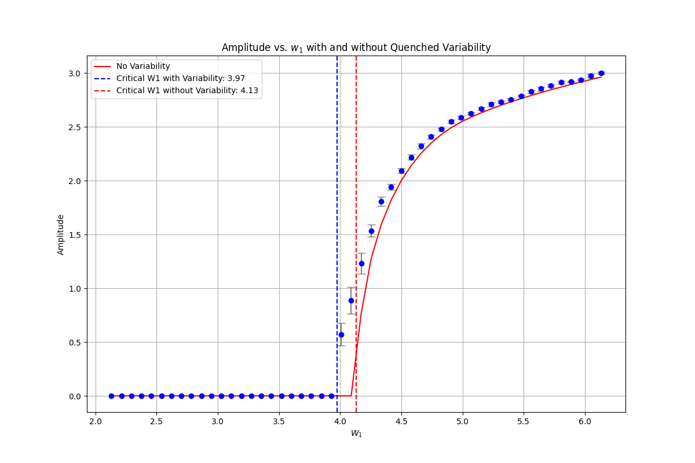
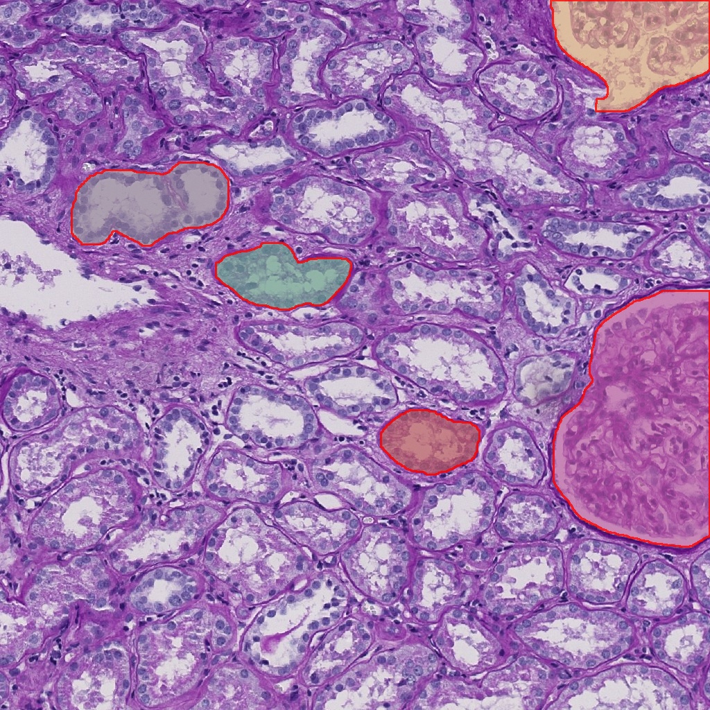
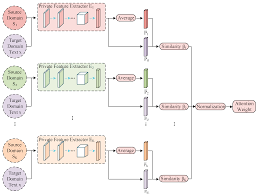
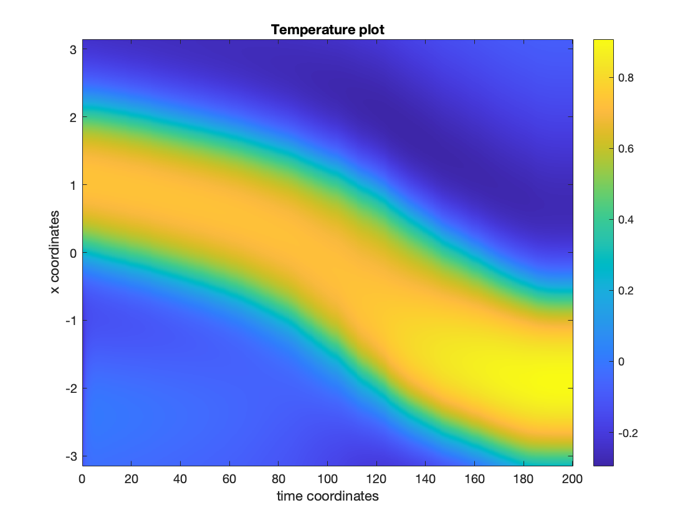

publications
Some of the projects I worked on.
Projects

Enhancing Memory Storage in Neuronal Networks
Project developed as part of my research internship supervised by Dr Alex Roxin at CRM Barcelona, and Prof Daniele Avitabile at VU Amsterdam, Spring 2024.
Code available at github.com/antoniofrancaib and project available here.

Segmenting Glomeruli Functional Tissue Units
Project developed as part of the final project for the Machine Learning (CZ4041) class by Prof Ke Yiping, Kelly at NTU Singapore, Fall 2023.
Code available at github.com/antoniofrancaib and project available here.


On the Amari Neural Field Equation
Project developed as part of an independent study supervised by Prof Daniele Avitabile at VU Amsterdam, Spring 2022.
Project report available here.